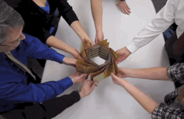

Sending stuff up to space is no easy task — even 45 years after Apollo 11. Size, weight, and cost are all massively important, so some researchers are turning to advanced origami to fold up solar arrays. The result of their two years' worth of work is a solar array with a diameter of just 8.9 feet (2.7 meters) when folded and a massive 82 feet (25 meters) when unfurled. A 1/20th scale model of the array is what you see here.
To build the solar array, Shannon Zirbel and professor Larry Howell of Brigham Young University, and mechanical engineer Brian Trease of NASA's Jet Propulsion Laboratory, enlisted the help of renowned origami expert Robert Lang. One of the major difficulties faced by the team is that solar arrays are not as thin as paper. You have to rethink a lot of that design in order to accommodate the thickness that starts to accumulate with each bend,
Trease said in a press release.
It's expensive and difficult to get things into space; you're very constrained in space. With origami you can make it compact for launch and then as you get into space it can deploy and be large.
Space is a great place for a solar panel because you don't have to worry about nighttime and there are no clouds and no weather. Origami could also be used for antennas, solar sails and even expandable nets used to catch asteroids.
Larry Howell
BYU professor and research team leader
Solar arrays already implement some basic accordion-style folding techniques to make it easier to get them up to space, but the novel circular design used here allows for more surface area in less space. It can also be wrapped around the satellite for launch, and it can be deployed without the assistance of an astronaut. It's not just for big satellites, either. Zirbel envisions smaller versions of the solar arrays could be used with inexpensive, mini satellites like CubeSats. The project is still in the prototype phase, but more work is being done to make these art-inspired solar arrays a reality.